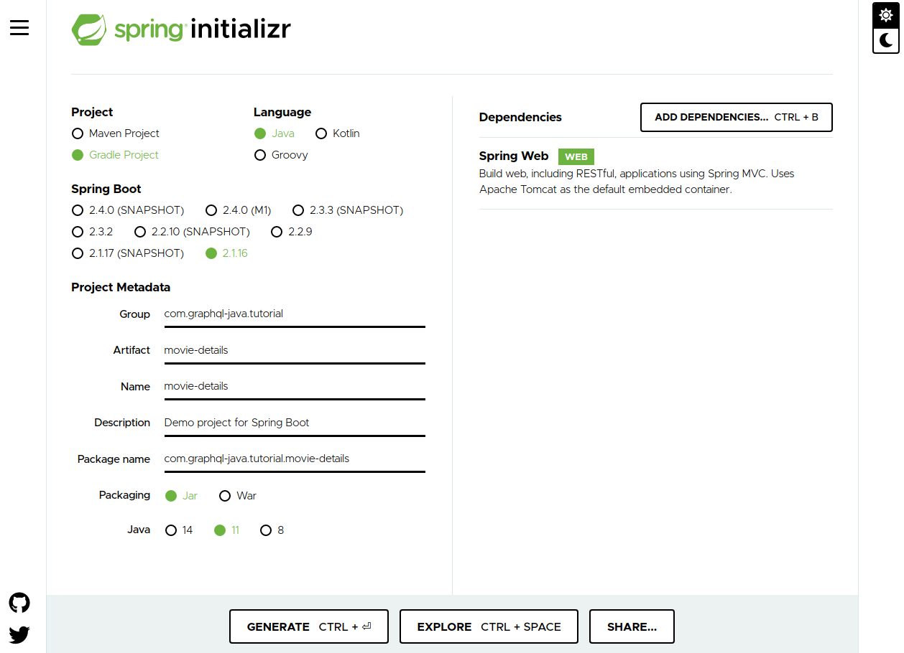

Prof. Dr. Frank J. Affonso.
Projeto criado com ZURB Foundation 6.6.3.
GRUPO: 6
Pré-requisitos
O objetivo deste tutorial é apresentar como utilizar Graphql em um projeto Java.
O Graphql é uma linguagem de consulta criada pelo Facebook, que considerada uma alternativa ao Rest e SOAP.
GraphQL fornece uma descrição completa e compreensível dos dados em sua API, dá aos clientes o poder de pedir exatamente o que precisam e nada mais, torna mais fácil evoluir APIs ao longo do tempo e habilita ferramentas poderosas de desenvolvedor.
Graphql-playground é uma ferramenta para testar as consultas em graphql.
Para o exemplo, vamos supor que a gente queira buscar detalhes de um filme específico de uma plataforma de streaming. Com GraphQL, a seguinte consulta seria enviada ao servidor para retornar os detalhes do filme com o identificador "movie-1".
Para o desenvolvimento deste tutorial, o Spring initializr será utilizado (https://start.spring.io)

Após gerar o projeto e abrir, vamos modificar o arquivo
build.gradle deixando as dependências como o exemplo abaixo:
Vamos adicionar um novo arquivo schema.graphqls no diretório
src/main/resources com o seguinte código:
Nesse schema é definido a nossa consulta (que retorna um tipo Movie) e os tipos Movie e Director.
Agora para fazer a leitura deste schema vamos criar a classe
GraphQLProvider no pacote com.graphqljava.tutorial.moviedetails
com os seguintes metodos:init, que irá criar uma instância GraphQL,
Esta instância GraphQL é exposta como um Spring Bean por meio do método
graphQL() anotado com @Bean, em seguida buildSchema
que cria uma instancia GraphQLSchema e conecta o código para buscar dados, e
por ultimo o buildWiring que usa a classe graphQLDataFetchers
que ainda vamos criar, para resgistrar as buscas dos dados.
O próximo passo será criar a classe GraphQLDataFetchers
que contem duas listas, uma para filmes e outra para diretores. De
mesmo modo, contem dois metodos para busca dos filmes e diretores
Veja o conteúdo da classe GraphQLDataFetchers
Observação: Neste exemplo os dados vieram de uma lista estatica em uma classe, mas nao quer dizer que não possa vir de uma lista estática na memória, de um banco de dados ou serviço externo.
Para dar inicio ao teste, primeiramente temos que rodar o projeto
movie-details (botao direito, run).
Após isso basta abrir o Graphql-Playground
e deixar como na imagem a seguir, "URL ENDPOINT" e http://localhost:8080/graphql e clicar em Open.
Na tela que será mostrada, é possível entrar com a consulta, clicar no icone "play" e visualizar o retorno.